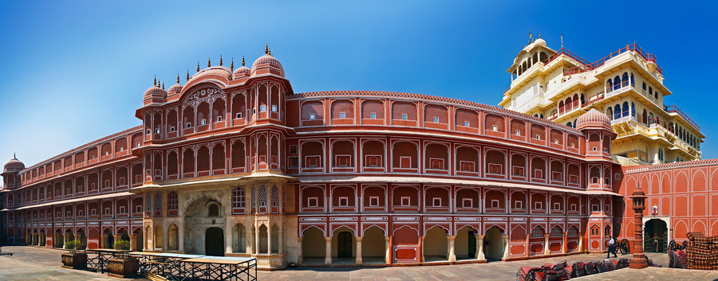
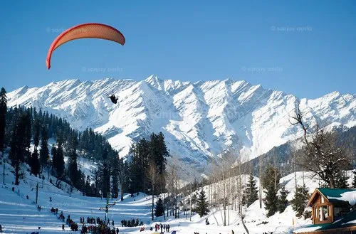

Popular Attractions
1. The Taj Mahal, Agra

A UNESCO World Heritage site, the Taj Mahal is a symbol of love and an architectural marvel.
2. Jaipur City Palace
A beautiful blend of Mughal and Rajput architecture, the City Palace is a must-visit.
3. Shimla
The capital of Himachal Pradesh, Shimla is known for its stunning hill station views.
Cultural Heritage
North India is rich in cultural diversity, with numerous festivals, dances, and traditional music. Explore the vibrant traditions that make this region unique.
Delicious Cuisine
Experience the flavors of North India with its famous dishes like Butter Chicken, Chole Bhature, and Samosas.
Travel Tips
- Dress modestly when visiting religious sites.
- Stay hydrated, especially in summer.
- Try local street food, but ensure it's from a hygienic vendor.